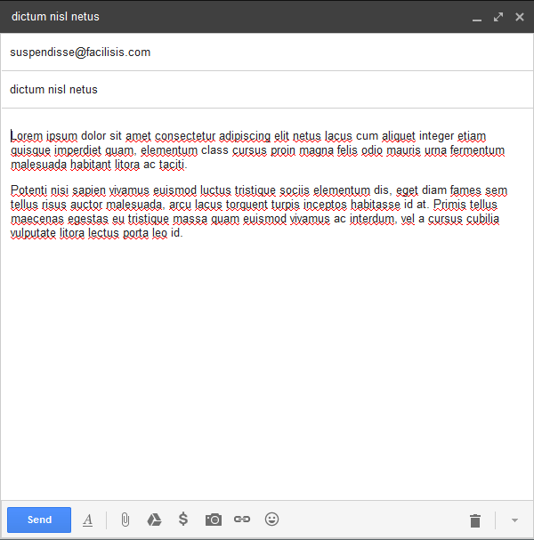
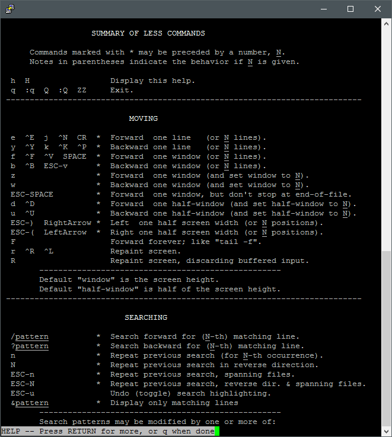

Mapbox is a library and service for authoring GIS interfaces on the web, with this newest library utilizing modern, hardware accelerated WebGL rendering. It provides a very robust API and extensive documentation for effectively working
with it – getting a “hello world” out of it took just a few minutes. Further, performance was excellent wherever I could test it, and it appears to be very extensible for supporting any specific requirements.
Studio 5 - Mapbox GL
My focus for this exercise was getting in a degree of interactivity, and displaying some custom data. The map is instantiated to Davis’s coordinates (latitude and longitude coordinates are in reverse order in Mapbox GL!), shows a simple
menu with style options, and has location markers. The big win for me was figuring out how to link to an external json file with my location marker definitions, so that I do not have to define my content in the script file.
Studio 4
The voyager probes are a product of pure want for exploration. They're an impressively long-term undertaking with a 60+ year life span. Their goal is to collect the first data on the medium outside our solar system, which they have still
not left in nearly 40 years of flight time. It made several flybys of planets collecting spectral and other data, and made the first full solar system family photo, including sol and all of its planets.
Initial
This project chronicles their inner solar system journey over time. Starting with a view of Earth's orbit, the probes are launched by the user, making the view zoom out and start tracking the path of the probes. Were more time available
to me, I would have liked to include stopping points and additional information for each major event along their journey. This may have been accomplished through a scrubbing timeline and photograph pop-ups.
Launched!
Web Form Review
Thunderbird. This interface hasn’t changed in many years. Perhaps that means its effective at what it needs to do, considering it has been so popular in its niche for that time. Email is a stable specification and does not suffer the constant
re-invention of many other web platforms.
Mozilla Thunderbird
The message composition form opens in a break-out window from the main application, separating it into its own entity with its own hierarchy sandbox. Many options are presented to the user, but largest field, the message input, is what
takes up the most attention as is due. Other options are grouped by general function with a label and/or an icon. Any element with only an icon has an identifying hover text, with the icon being directly descriptive of function. Any
icon that does not directly indicate its function has a visible label. There are many, many options under drop down or pop-up windows that are not needed for most messages, and so are duly hidden.

Google Gmail
Gmail goes even further in not showing anything beyond bare essentials in its basic composer. I believe its general hierarchy is more effective than Thunderbird. It has the subject and recipient at the top, then the message field, then
actions on the message. This more mirrors the flow of things as one composes a message. Especially effective is the send button being well differentiated from the others, and located at a very prominent position as so lauded in Learning IxD From Everyday Objects.
Interface Review
Command line user interfaces have long been the core of computing technology, a relatively low level abstraction that is easy to develop for, but cannot directly guide a user experience as it is primarily user driven. It’s used for input,
or markup, to control some program that has been designed to recognize and respond to certain strings. This allows an experienced user of some program to quickly enter specific commands to perform some desired operation, but again
provides little direct guidance to those inexperienced.
HTML/CSS is an interface to render things in a browser, typically composed as text markup by a user. The user directly types in the desired attributes with exact desired specifications and the program takes care of the rest. Now consider
a graphical user interface that allows the same level of input and control for the multitude of HTML/CSS attributes. There has not to my knowledge been a successful one.
The UI designs I appreciate the most allow utilizing both methods – windows explorer for viewing or navigating files and the command line for performing options on them, big lists of emojis but also being able to directly type in the name
of a particular one, etc. It's a trade off of more upfront work for more immediate results later vs less effort and experience required for a visual experience; painting with words is hard.
I have long resisted mobile tech because I do not enjoy the nearly universal visuals-only interfaces. I don’t like wading through subpages and menus and popups to get a program to do something that I’m already familiar with. I want instant
gratification and using the simplest methods possible usually makes that happen.

Perhaps vim is too reliant on hidden text commands...